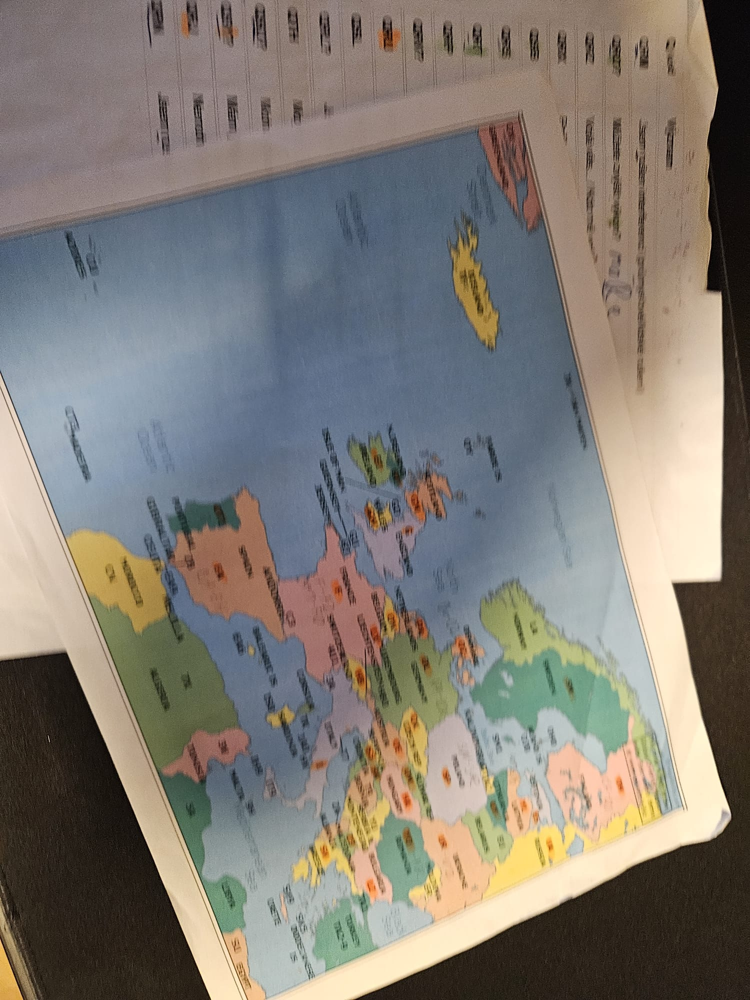
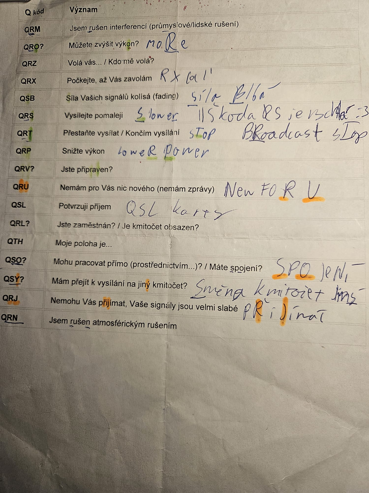
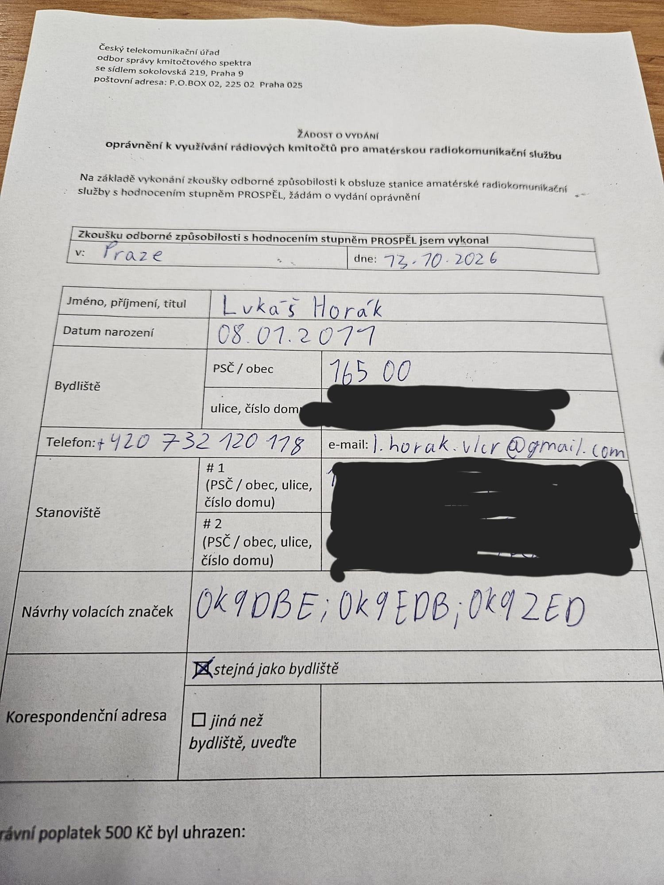
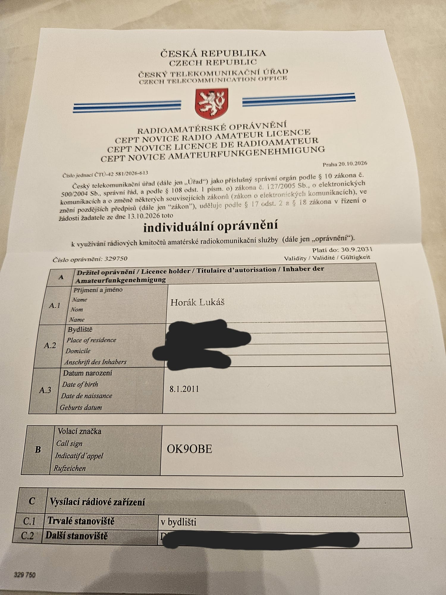

Jelikož jsem dlouhou dobu dělal elektrotechniku, tak mi jednoho rána vlezlo do hlavy, že bych mohl stavět vysílače, atnény a objevit svět éteru.
1. Počátek onoho nadšení
Nejprve jsem se na oné radioamaterské zkoušky musel naučit, toto vyžadovalo rešerši zákona v této oblasti. Jsou 2 typy radioamaterských licencí: A (HAREC) a N (NOVICE). Liší se v tom že N je jednoduší na získání, ale má svá omezení, jako nepřístupnost k některým kmitočtům a hlavně omezený výkon na 10W. Nutno dodat že aktuálně se dělá novela zákona, která by Nkám dovolila vysílat až na 100w, jako je tomu třeba již na Slovensku.
Původně jsem chtěl jít na Nko, když jsem slyšel že to není tak težký, a s 10W člověk s dobrou anénnou na krátkých vlnách za dobrých podmínek ionosféry se spojí se skoro celým světem. Pak mi ale radili ať jsou rovnou na A, že to není o tolik těžší. Sedl jsem si k webu hamotazky.cz.
Když jsem viděl, že primární rozdíl v počtu otázek mezi A a N je v kategoriích, které místo logkcého myšlení spočívají v tom se naučit co nejvíc informací, rozhodl jsem se že tedy půjdu na N, a později až naberu provozní dovednosti přirozenou cestou si udělám A.
2. Jak jsem se učil
Na začátek velké díky OK1GOD - Filipu Melíkovi, který je autorem oné stránky hamotazky.cz. Učil jsem se otázky postupně, takže podle bloků, v jakých jsou ve zkouškách rozdělené - Řád/zákony, provozní dovednosti, technika a elektronika (nebo nějak tak).
Často krát jsem narazil na otázku, která mi vůbec nebyla jásná, v tu chvíli jsem geminimu tu otázku dal, ať mi ten důvod vysvětlí, měl jsem tak s ním konverzaci ve které my vysvětloval ty otázky a odpovědi. To dle mého názoru byla jedna z věcí co mi nejvíc pomohla- porozumět otázce.
Další velikou zapeklitostí byly Q-kódy, aneb seznam asi více než 500 oficiálních mezinárodních Q-kódů (na zkoušky se jich neučíte 500, na A 21 a na N 17). Nutno dodat že tyto Q kódy nedávají žádný smysl, a to vůbec. Zkuste si tipnout co znamená QRS, typněte si to, dělejte. Máte vaší odpověď? Správná odpověď je: vysílejte pomaleji. Kdo se jednoho rána probudil, a rozhodl se že QRS bude vysílejte pomaleji, jak mu to vlezlo do hlavy??!!?!? Nevadí zlobit se nebudu, prošel tím každý radioamatér přede mnou tak to zvládnu i já. Nakonec jsem si zkusil pomocí slovních hříček a podobných blbůstek v tom udělat systém, viz fotka papíru níže, což mi dost pomohlo a mohu tuto metodu učení jen doporučit.



3. Registrace na zkoušku
Nejprve jsem si musel zjisit, kdy zkoušky budou. To jsem udělal na webu ČTÚ v sekci oznámení zkoušek https://ctu.gov.cz/amaterske-sluzby. Tam jsem si zjistil že zkoušky se budou konat 13.10. v 9:00 v budově ČTÚ. Očekával bych že u termínu zkoušky by byl odkaz na registraci na onu zkoušku, tomu ale ve stylu ČTÚ tak nebylo. Nakonec přihláška na zkoušku byla nalezena na https://eportal.ctu.gov.cz/form-category/2. Tam jsem vyplnil svůj věk, na jaký chci průkaz, adresu bydliště rodné číslo atd. S tím že mi je (v době psaní zkoušky bylo) 15let, musel jsem k tomu přiložit podepsaný formulář od rodičů, ten ale na internetu nebyl k stažení, takže jsem v LibreOffice uplácal formulář, otec to podepsal a nahrál jsem to tam jako sken. Po vyplnění jsem napětě stiskl talčítko "Odeslat formulář e-mailem" a do počítače se mi stáhla zip složka s pdfkama věcí co jsem tam vyplnil, taky jsem v onom přihlašovacím mailu viděl instruktáž na zaslání mailu.
Mail jsem zaslal, v pondělí mi dorazilo mailem potvrzení které vypadalo jako že bylo napsané na psacím stroji, bylo to ale pouze potvrzení že se jim doručil můj mail, nikoli pozvání na zoušku. Tak jsem asi 16 dní před zkouškou napsal něco na styl jestli jsem pozvaný a jestli prošla platba, přiložil jsem i PDF s potvrzením platby. O den později se mi ozvala paní, že mojí žádost dali omylem do špatné kategorie a že děkuje že jsem se ozval. Součástí jejího mailu byla pozvánka na zkoušku.
4. Den oné zkoušky
Byl to ten slavný den úterý 13.10.2026, kdy já nešel na výuku, místo toho jel podzemní drahou až na stanici meta Vysočanská. Tam jsem dorazil na recepci ČTÚ, kde jsem podepsal docházkovou listinu a dali mi štítek s nápisem návštěva. Pak jsme byly odvedeni do dosti veliké a podlouhlé zasedací místnosti, kde jsme onu zkošuku skládali.
Nejprve nám jeden z členů komise, která během mé zkoušky byla trojčlená, řekl úvodní slova o radioamaterství, proč si máme vážit tohoto titulu, co to znamená a jaké to má pro nás výhody. Pak nám byl rozdán test s zadáním a záznamovým archem. Povídali nám ať nepíšeme do zadání a pouze do záznamového archu, já se svýmy zkušenostmi z CERMATu jsem okamžitě začal psát do zadání. Test mi šel hladce, byl jsem dobře naučený, dokonce to byla i trochu zábava. Na test byla 1 hodina, já ho se spoustou lidí odevzdal dříve, jelikož hodina je na toto času habakuk. Čekali jsme před zasedačkou. V tu chvíli opravdu nervy tekly. Nejprve zavovaly 2 pány dovnitř. To bylo dobré znamení, protože jsem na blogu OK1JOB četl jeho zkušenost, kde nejprve volali neúspěšné. Z nějakého nevysvětlitelného důvodu mi nervy tekly ještě víc. Pak nás tam zavovali všechny, řekli nám že jsme úspěšní.
Teď už zbývalo jen zažádat o koncesi/licenci. Žádost podat šlo doma e-portálem nebo fyzicky. Já jsem volil možnost fyzicky, protože jsem onen eportál nikdy nepoužil, a ani nevím jestli ho jako 15letý mohu užít. Měli jse dát návrhy na 3 volačky podle priorit, v tuto chvíli doporučuji mít ověřenou dostupnost volaček v databázi ČTÚ. Já zvolil OK9DBE, OK9EDB a OK9ZED. Nakonec mi dali OK9ODE, nevím jestli je to tím že OK9DBE byla nějak zabraná nebo jsem jen hloupě napsal to D aby vypadalo jako O.
5. Úspěšně radioamatér
Samotná licence mi pak dorazila o 10 dnů později (23.10.2026) doporučeným dopisem, který jsem si šel vyzvednout na poštu. Už 24.10.2026 jsem měl udělané své první spojení s OK1FI, které jsem udělal na Liberecku, to už je ale na další leccos a všelicos.
